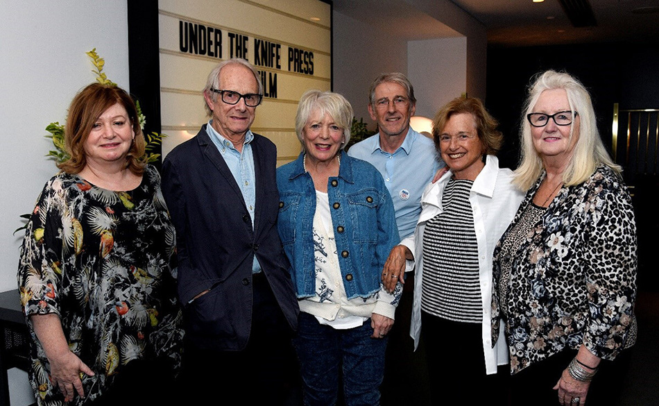

Last Thursday the world premiere of Under the Knife took place at the Curzon Containers, South Bank. The feature-length documentary traces the history of the NHS from its conception in 1948 post-war Britain to modern day. From its stormy birth, through seven decades of turmoil and political warfare, it has withstood almost everything that has confronted it – until now.
The film began in 2014 as a passion project for producer Pam Kleinot, who was working in the NHS and became increasingly alarmed by what she saw. "I experienced the surveillance, targets for staff and uncertainty that resulted from funding increasingly being cut," she said. It was this that spurred her on to make the film. What started out as a personal project grew into a four-year investigation resulting in this 90-minute film made with Emmy award-winning director Susan Steinberg and narrated by actor Alison Steadman, who joined us at the premiere and described Under the Knife as "an inspiring film that...gives us courage."
But Pam wants this film to be more than an interesting watch – she wants it to have impact. That’s why she's joined forces with Keep Our NHS Public (KONP) the campaigning organisation that in March saved Ealing and Charing Cross hospitals. A successful crowdfunding campaign with KONP and a number of trade unions has meant that Under the Knife will be screened in over 50 venues free of charge – locations include London, Manchester, Birmingham, Newcastle, Liverpool, and Brighton from 14-18 October. To book free tickets visit: undertheknifefilm.co.uk/screenings.
Award-winning filmmaker, Ken Loach, a big supporter of the film, attended the premiere along with Alison Steadman, Aneira Thomas, the first-ever baby to be born on the NHS, as well as Michael Mansfield QC who features in the film.
We’re thrilled that the Daily Mirror, with their track-record of ground-breaking investigative journalism, has come on board as our media partner. On Thursday night, Associate Editor, Kevin Maguire, chaired a provocative Q&A with Pam Kleinot, Susan Steinberg and Tony O’Sullivan, co-chair Keep Out NHS Public. Journalist Paul Routledge wrote this article setting the scene for the film’s release www.mirror.co.uk/news/politics/how-tories-plotted-decades-sell-20102171
Ken Loach was unequivocal about the film: "Films, like words, can be weapons. This film is a weapon in our struggle to save the NHS. There should be details of the film in every hospital reception, every GP's waiting room, every community centre."
Under the Knife ends on hope, illustrating how communities, health care professionals and campaigners have effectively fought to defend hospitals and services threatened with closure through the courts, in council chambers and on the streets.
Tony O’Sullivan added: "This is the best film around on the NHS. Under the Knife shows the vital importance of the NHS to society but most important of all, the film gives hope to those who are campaigning to keep the NHS safe for our children. You just have to see it."